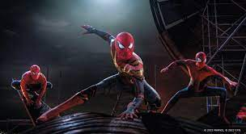

W4 Demo | No Way Home
Spider-Man
No Way Home
REVIEW No Way Home
Alex Turcotte August 14, 2023
My review of in my opinion the best Spider-Man Movie. No Way Home Where do I begin? It's filled with action, surprises, drama, and emotions. The fact that it shows all three spider-man we all grew up watching, just makes the movie amazing with that one fact. I also thought that they did an amazing job bringing back the old actors who played the villans from the old spider-man movies. In my opinion one of the best marvel movies of all time. Spider-Man is my favorite so that might be a little persuade so say that, but I don't think anyone can disagree saying that this wasn't one of the best movies during its time in 2021.

Facts about No Way Home
- Beneict Cumberpatch admitted to not reading the full script, wanting to surprise himself with the final product.
- Jamie Foxx and Willem Defoe were both very excited to play their respective villans again.
- Tom Holland helped to save this movie from cancellation by forcing renegotiations between Sony and Disney.
- According to Zendaya and Tom Holland, Willem Dafoe's portrayal of the Green Goblin in this movie genuinely frightened everyone on-set.
- Willem Dafoe insisted that he be allowed to participate in the filming of the action sequences and perform as many stunts as possible.
HOME
CAST
REVIEW
| Back To Top! |
8copy A Turcotte | SE111.02 | 202340